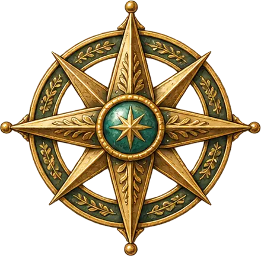
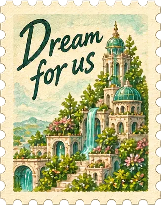
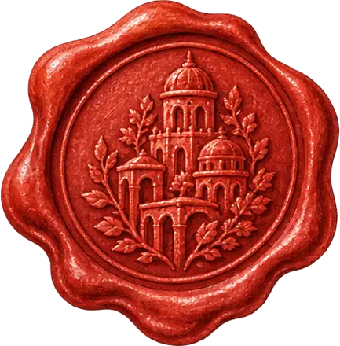
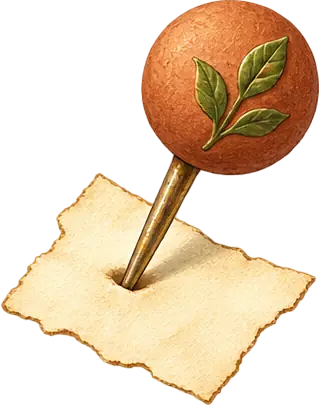

From a six-person house to a whole village — every way humans share a roof, charted. Browse the shapes below, then explore the map. Positions are my read of each model — I'd love to hear yours.
This chart places every co-living model on two spectrums at a time: how much is shared, size, time, who holds the power, values and effort. Pick the axes (or a preset), hover a symbol for a first look, click for the full field notes.




Where would you sit on this map? Find your way of living together →A name tells you less than you’d think. Two cohousing communities can share almost nothing: one is owned and one is rented, one was built for seniors and one for young families. Pick a way of living and see a few real places side by side.
Go deeper: how a place comes together →The Coliving Atlas is one room of a bigger library. These are the others.